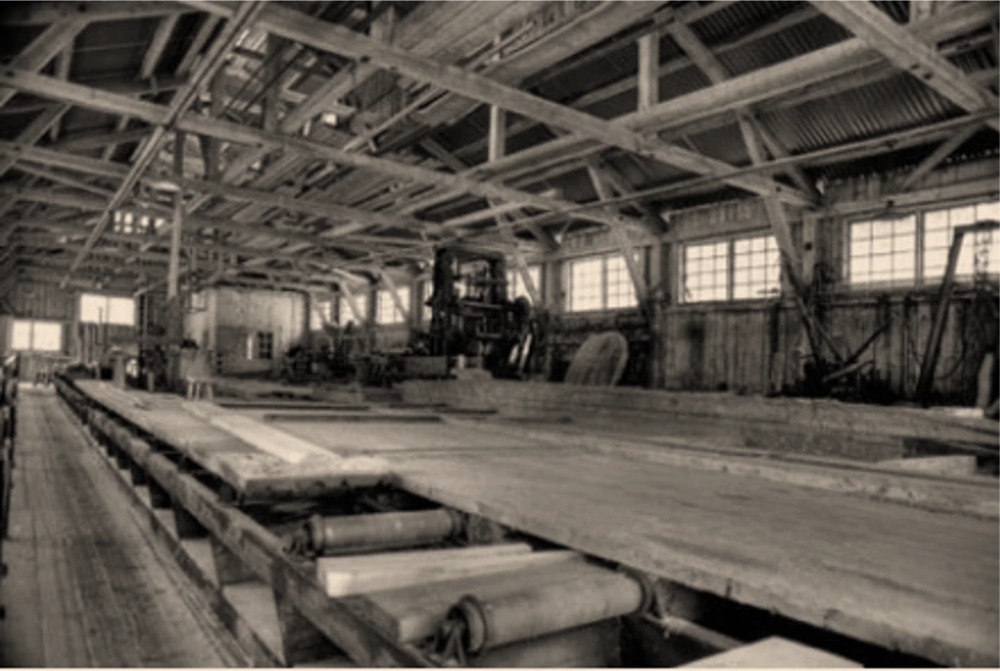
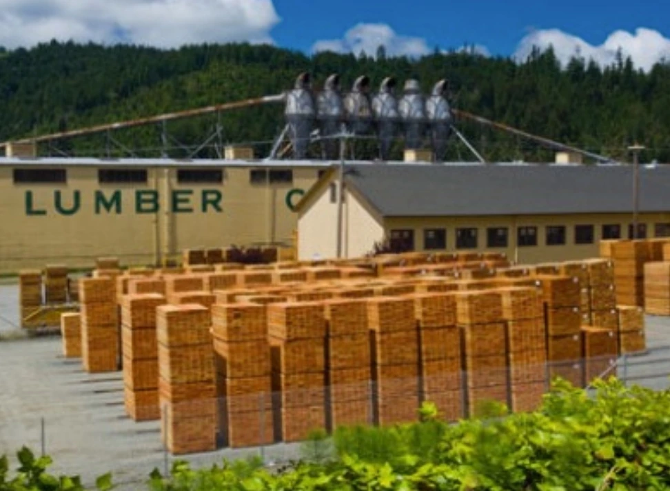
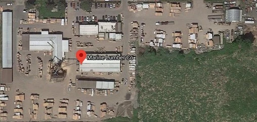

USA · Headquarters & Plants
Tualatin & Sherwood, Oregon
Corporate headquarters and two Pacific Northwest manufacturing plants featuring industrial sawing lines, automated crosscut systems, and heavy assembly staging.
Founded in 1946 in Portland, Oregon, Marine Lumber has grown from supplying maritime lining lumber into an international manufacturer of custom wood packaging, pallets, skids, dunnage, and processed wood products.
Company Heritage
Founded in 1946 in Portland, Oregon, Marine Lumber Co. began by supplying lining lumber to secure breakbulk cargo in ocean vessel holds. Over three generations of family ownership, the business expanded in step with modern global logistics into an established manufacturer of custom industrial wood packaging, production pallets, heavy-duty skids, cut-to-size lumber, and export dunnage.
Today, headquartered in Tualatin, Oregon, Marine Lumber operates manufacturing facilities across the United States, Brazil, and China, with a commercial office in London, United Kingdom. We manufacture packaging and processed wood components for industrial machinery, electrical equipment, electronics, defense logistics, agriculture, and building products.

Company Evolution
Founded in Portland, Oregon as a specialized supplier of lining lumber to secure ocean vessel cargo in ship holds prior to the emergence of containerized shipping.
Pivoted operations as intermodal containers replaced ship lining lumber, transitioning into precision cut-to-size lumber, industrial plywood, and custom crating for industrial manufacturers.

Expanded manufacturing plant output and yard staging capacity, extending crating and packaging component delivery beyond the regional Northwest to nationwide enterprise accounts.

Expanded domestic Oregon production at the flagship Sherwood plant, and established an international manufacturing facility in Qingdao, China dedicated to custom export crating, electronics packaging, and Asia-Pacific logistics.
Established a dedicated manufacturing facility in Santa Catarina, Brazil adjacent to premier forestry mills, producing moving containers, industrial packaging, and containerized lumber.
Operating 4 manufacturing facilities across 3 countries under unified quality inspection standards, delivering reliable supply redundancy and wood packaging built to customer specifications.
Global Operations
USA · Headquarters & Plants
Corporate headquarters and two Pacific Northwest manufacturing plants featuring industrial sawing lines, automated crosscut systems, and heavy assembly staging.
Brazil · South America
Manufacturing facility integrated directly with local timber mills, dedicated to precision-cut plywood, household goods moving lift vans, and industrial container packaging.
China · Asia-Pacific
Asia-Pacific manufacturing facility located near the Port of Qingdao, with dedicated crating production lines and export packaging assembly.
Manufacturing Principles
Consistent, on-schedule production delivery for recurring programs.
Selected sound lumber and industrial-grade panels suited for transport.
Flexible manufacturing capacity from individual builds to truckload orders.
Multiple manufacturing locations providing consistent raw material access.
